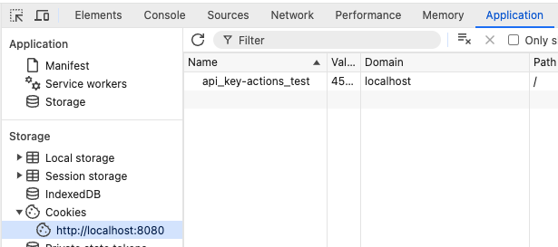

Demo Mode¶
A PlantTracer database consists of several DyanmoDB tables with a given table prefix and an S3 bucket.
When the database is created, a default course with the ID demo_course is created. There are two users: a default course admin and a default demo user. The demo course is then prepopulated with several demo movies from the test data.
The demo user is identified with a special API key.
Demo mode is enabled by sedding the environment variable DEMO_COURSE_ID to the course_id of the course that is the demo course. It need not be the demo course that is created as part of the default installation.
Demo Mode Goals¶
Allows anyone on the web to anonymously and securely use some aspects of the Plant Tracer web app
Allow the anonymous demo user to experience plant movement tracking in the app without requiring the user to create an account in a course or to be aware of the movie lifecycle of upload, track, publish, delete
Disallow the persistence of modifications to all webapp-managed data while in demo mode
Functions¶
Demo mode allows
View the list of movies in a single table
Play a movie without tracking
Click on ‘analyze’ to show the user interface for playing a movie that has a stored trace
Download a CSV representation of movie trace data
Demo mode restrictions:
No uploading of movies
No deleting of movies
No renaming of titles, descriptions
No deleting or adding trackpoints
No editing any text
No re-tracking of movies
Required in the database¶
Every new database is created with a demo user and a few movies.
The demo user has a perdefiend API key.
When DEMO_COURSE_ID is set, the authentication routines always return the demo mode api_key. That is, there is no way to log in or log out.
To edit the movies in the demo course, just run another instance that is attached to the same database and edit the movies in the demo course.
Implementation¶
Demo Mode uses the following environment variables:
DEMO_COURSE_ID - The course_id of the demo course. (Created as demo by the dbmaint.py script)
DEMO_DYNAMODB_PREFIX - The table prefix. (Created as demo- by the dbutil.py script)
If we are in demo mode:
We are always logged in, and always in Demo Mode.
auth.get_user_api_key() always returns an API Key for demo mode.
demo_user JavaScript global variable set to
true(if in demo mode)demo_user Jinja2 variable will get set to
True(otherwise it isFalse)
Rendering control:
CSS Class
demoelements display only if in demo modeCSS Class
nodemoelements display only if not in demo mode
To make changes to the demo course:
Create another user who is enrolled in DEMO_COURSE and another login with the same DEMO_PREFIX
Troubleshooting/Development Note¶
Plant-Tracer webapp creates an api_key-<database name> cookie in order to tracker the login state of a session. Sometimes this cookie does not clear itself upon logout and it is necessary to manually delete the cookie, especially in order to have a valid demo mode enabled.
Here is an example of such a cookie:
